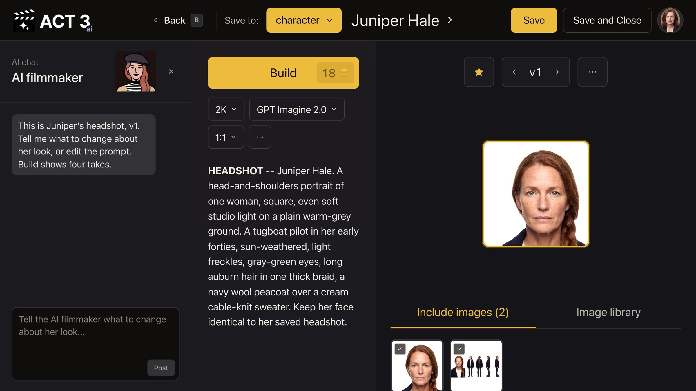

Step 8 of 8
Change the look and save
Tell the AI filmmaker the change, or edit the prompt yourself. Click Build for four takes, then pick the best one. Click Save and Close to keep it as the new version.

Make one change at a time
Say what should change, and only that: "Give her a short pixie cut." The AI filmmaker rewrites the hair in the prompt (the highlighted words) and leaves the rest alone. It keeps her current headshot and character sheet ticked under Include images, so the face does not drift. You can also type straight into the prompt.
Build, compare, pick
- Click Build. Its price, 18 credits, is on the button.
- Four takes come back as the next version. Click the one you like; it moves to the center with a yellow edge.
- Not right yet? Change the words and build again. Each build is a new version, and the arrows step back through them.
Your decision: Save, or Save and Close
Save keeps the picked take on the character and leaves you in the Image Builder for another change. Save and Close keeps it and returns you to the character's page.
Back on the character page
The sheet now shows version 2, starred, so every new shot uses the new look. If a full-body view still shows the old hair, click Regenerate full body (18 credits) so all five views match. Version 1 is never lost: the version arrows bring it back, and the star decides which one the film uses.
That is a whole character
You described a character in words, ACT 3 AI cast the face and built the sheet, and you changed the look in the Image Builder. Next, put your character in a scene: open the Editor and build a first frame with them in it (guide 6, Improve First Frame). Continue returns to the Step-by-Step Guide.